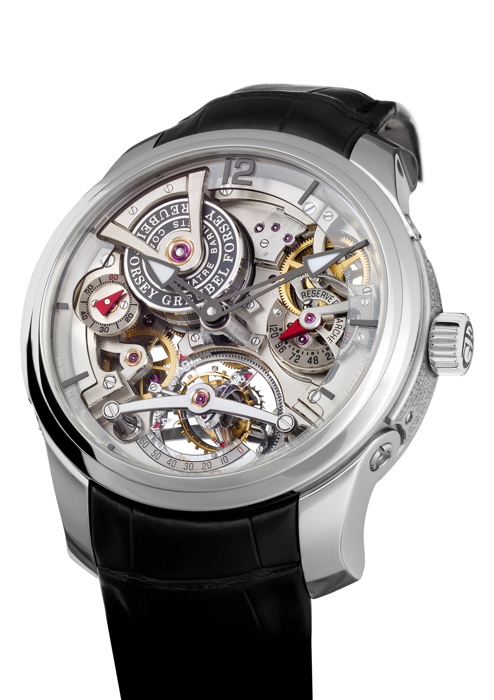
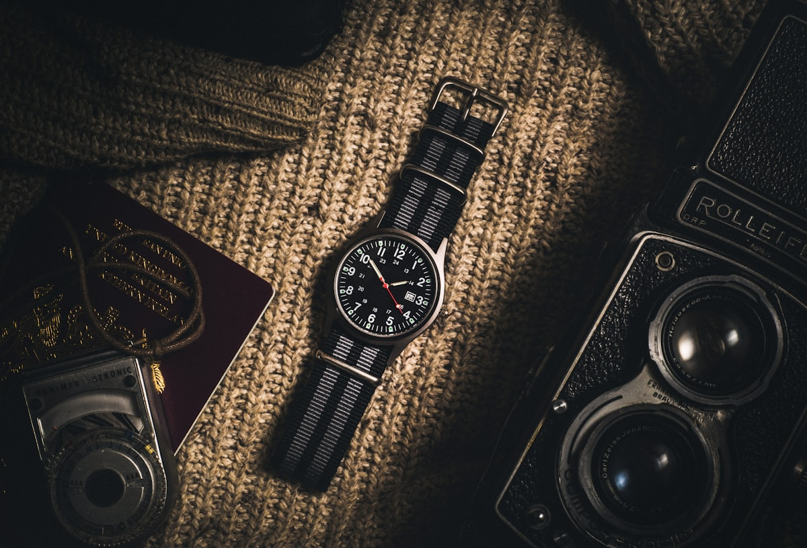

Our Horological Philosophy
In an era increasingly dominated by disposable quartz smartwatches and digital screens, CompassDialUp champions the perpetual beauty of mechanical autonomous timekeeping. Established in 1994 along Mercer Street in New York, our atelier operates on a foundational premise of extreme mechanical autonomy, astronomical navigation fidelity, and decadal heirloom endurance.
We believe a true field chronometer must be capable of guiding an explorer across continents without reliance upon battery cells, microchips, or orbital satellite constellations. By uniting solar azimuth compass mathematics with high-frequency mechanical calibers, our watchmakers create horological instruments that serve as permanent navigational companions.


Classical Watchmaking
Hand-turned balance staffs, heat-blued screws, and precision staking tools utilized by certified master horologists at our Mercer Street workshop.

Dynamic Regulation
Regulated in six positions and tested across freezing and desert temperatures to guarantee absolute rate stability within ±2 seconds daily.
Geneva Striping & Anglage
Hand-polished chamfers, mirror-polished screw sinks, and deep Côtes de Genève applied to all visible and interior movement bridges.
The Mercer Street Atelier
Located at 181 Mercer Street, New York, NY 10012, United States, our Manhattan gallery and watchmaker cleanroom occupies a landmark nineteenth-century architectural loft. Visitors can witness movements being regulated on timing scopes, examine exploded caliber components, and test compass bezel mechanics under the guidance of our guild artisans.
We operate private horological consultations strictly by appointment. Telephone our watchmaker concierge directly at +1-888-777-5845 to reserve your personal bespoke consultation.